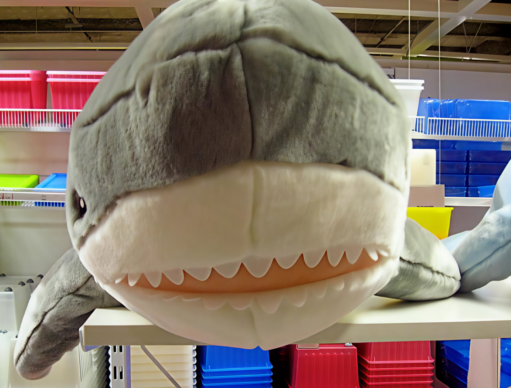

Introduction
Dating way back to 2006 or so a shark-like plush first appeared at IKEA with the name of Korall Haj.
The plush toy got first sold from at least 2008 under names such as "Grössby" and "Klappar Haj". Surprisingly these first versions didn't have the signature blue color Blåhajs around the world are known for, but were grey. The price of it back then was $19.99 usd, wich would be worth about $30 usd today as of 2026.
Inflation Calculator See it on the WaybackMachine.Around 2012 the Shark was started to be made out of blue fabric, but still was referred to as "Klappar Haj". The current and more know name Blåhaj got adopted in early 2014 at a price of $14.99 usd accounted to inflation being worth roughly $23 usd as of 2026.
Inflation Calculator See it on the WaybackMachineIt is both made from the outside and the inside of recycled polyester and can be washed at 40° (104°F). The plush is available in two sizes - a larger 1-meter (39 1⁄4 in) version and a small 0.55-meter (21 3⁄4 in) version that is also referred to as smolhaj. Different to most commonly used plastic eyes, the IKEA plush toys have embroidered eyes, making the plushies more durable and ensuring safety. They are manufactured in Indonesia and Inda.
For IKEA's 80th anniversary stores in select asian markets IKEA released a IKEA meatboll blind box, that features a plushie shaped like their iconic meatball. When unzipped and flipped inside-out, the fabric reveals a hidden character, amongst them also a mini version of Blåhaj.
Because of its popularity, IKEA has produced Blåhaj shopping bags for some regions. Blåhaj has also been used in marketing material and as a mascot for different campaigns. One specific campaign included Malaysia and Taiwan selling sesame-filled buns resembling Blåhaj.
See it on the WaybackMachine


